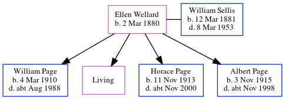

Ellen Fanny Maria Sellis (née Wellard) 1880 -
[ Home ] | [ Calendar ] | [ Surnames Index ] | [ Census Index ] | [ Family History ]Ellen Wellard, the wife of William Ernest Sellis (the third cousin once-removed on the father's side of Nigel Horne), was born on Mar 2, 18801 and married William (a general laborer with whom she had 4 children: William Charles Richard, Lena H M, Horace Stanley Wallis and Albert Edward Jellico, along with 1 surviving child) in Dover, Kent, England around May 19002. On Sep 29, 1939, she was living at 65 Marshall Street, Folkestone, Kent1. She is buried in Hawkinge, Kent, England.
Children
- William Charles Richard was born on Mar 4, 1910
- Horace Stanley Wallis was born on Nov 11, 1913
- Albert Edward Jellico was born on Nov 3, 1915
Citations
- 1939 Register - Findmypast (was the wife of the head of the household)
- England & Wales Marriages 1837-2005 - Findmypast
Media
William Ernest Page - Ellen Wellard - Gravestone

1939 Register Transcription - TNA-R39-1721-1721B-021-44
England & Wales marriages 1837-2005 Transcription - BMD-M-1900-2-AZ-000408-316
Family Tree
Generated by ged2site. Last updated on Jun 11, 2024